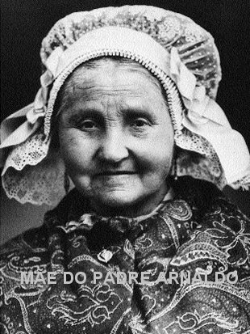
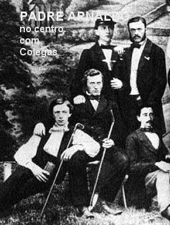
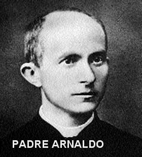
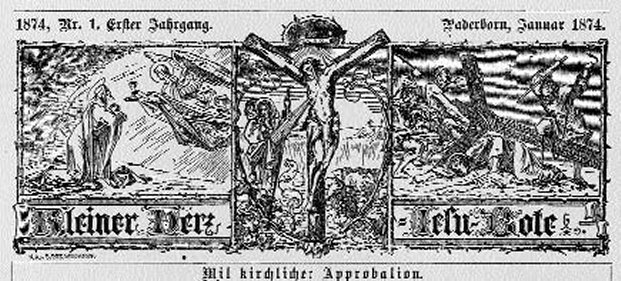

“NO CÉU BRILHA OUTRA ESTRELA”
O NASCIMENTO E SEUS PAIS
Arnaldo Janssen
(Arnold Janssen) nasceu no dia 5 de Novembro de 1837 em Goch, uma pequena cidade
da Baixa Renânia banhada pelo Rio Reno na Alemanha, 
Aos domingos a família unida participava da Santa Missa cantada, exatamente no horário em que o Pároco celebrava em honra da SANTÍSSIMA TRINDADE, e segundo o testemunho de um dos seus filhos, que se tornou Frade Capuchinho, mesmo no leito de morte, Gerhard suplicou aos seus filhos que continuassem com esta prática, porque causava satisfação a NOSSO SENHOR.
O senhor Gerhard também amava e tinha grande respeito pelo Mistério da SANTÍSSIMA TRINDADE. Na sua residência, junto da família, em muitas oportunidades manifestava uma imensa satisfação ao rezar junto com seus filhos, o Prólogo do Evangelho de São João que começa assim: “No princípio era o VERBO e o VERBO estava com DEUS, e o VERBO era DEUS...” (Jo 1, 1) . Também todas as segundas-feiras, ele oferecia a Santa Missa ao DIVINO ESPÍRITO SANTO, suplicando graças para uma produtiva semana de trabalho e sobretudo, para que sua família permanecesse sempre unida.
Sua mãe, a Senhora Anna Katharina Wellesen era também uma mulher de profundos sentimentos religiosos e de muitas orações. Criou dignamente os seus onze filhos, dos quais Arnaldo foi o segundo a nascer, e nunca faltou ou desleixou as suas obrigações domésticas, assim como, jamais abandonou a sua fidelidade e o seu amor puro a DEUS e a NOSSA SENHORA. Não faltava a Santa Missa por nenhum motivo, assim como, rezava o Terço diariamente e semanalmente rezava a Via-Sacra em casa, diante de uma imagem de JESUS Crucificado.
Arnaldo cresceu nesse magnífico ambiente, estudou e herdou em plenitude o espírito de oração de seu pai e da sua mãe, e como demonstração do seu incomensurável amor a DEUS, se aplicou com fervor nos estudos, seguindo dignamente a vida religiosa.
ESTUDANTE E SEMINARISTA

Em Outubro de 1849, passou a estudar no Liceu da Escola Diocesana em Gaesdonck. E se revelou um excelente estudante, preparando-se com seriedade, para seguir o ideal da sua existência. Em 11 de Julho de 1855 com a idade de apenas 18 anos, obteve o Certificado de conclusão escolar (Abitur) em Muenster.
Na sequência, desejando seguir a formação para Sacerdote, iniciou os Estudos Superiores na Real Academia de Muenster, a qual a partir de 1902 se tornou uma Universidade. Todavia, no seu tempo, durante três semestres, de 1855 até 1857 seguiu as lições de Lógica, Psicologia e Pedagogia aplicando-se de modo especial na Matemática, pois pretendia ser professor dessa disciplina.
Nesse tempo Arnaldo morava no «Collegium Borromeum», fundado em 1854, pelo Bispo Jorge Müller. Mas, de acordo com as normas vigentes, ele era jovem demais para iniciar a Teologia. Então, para aproveitar o tempo fez um curso de Ciências e de Matemática na Universidade de Bonn, com o consentimento do senhor Bispo, pois naquela época, era prioridade da Igreja local preparar bons professores para entrar no programa de ensino.
Em Julho de 1858 fez as provas finais para Professor e passou com excelente aproveitamento. Naquela época existia na Universidade de Bonn um prêmio, uma quantia de 50 táleros (mais ou menos Cinco Mil Reais) para o Professor que conseguisse resolver um difícil problema de alta Matemática, proposto pela Universidade. Ele venceu a prova e ganhou o prêmio. Então num gesto filial bem carinhoso, convidou o seu pai para assistir a solenidade de entrega do prêmio e também proporcionou ao seu pai, passar uns dias de férias em Bonn na companhia dele. Sem dúvida, o pai ficou muito feliz, pois foi a primeira vez que teve a oportunidade de desfrutar de um passeio.
Em fins de 1858, Arnaldo já estava com o título de Professor do Liceu para Matemática e Ciências, e, portanto, estava qualificado para ensinar aquelas matérias no Ensino Médio. A seguir, em 1859, voltou a Münster para continuar a sua formação Sacerdotal. Estudou Dogmática, Moral, Direito Canônico, Teologia e Ciências Bíblicas.
SACERDOTE DO DEUS ALTÍSSIMO
Com 24 anos de idade,
foi Ordenado Sacerdote no dia 15 de Agosto de 1861, na Festa da ASSUNÇÃO DE NOSSA
SENHORA AOS CÉUS, pelo Bispo João Jorge 
Em 1867 visitou a Exposição Mundial de Paris, e também aproveitou para visitar a cidade de Ars, onde tinha atuado de maneira admirável e morrido o Santo Pároco João Baptista Maria Vianney (O famoso "Cura d'Ars). Em Setembro desse mesmo ano estava presente na magna assembléia dos católicos da Alemanha e da Áustria, no denominado «Katholikentag».
Encontrou-se com o Pe. Malfatti S. J. , Diretor Nacional do Apostolado da Oração, e por determinação do mesmo foi indicado para Diretor Diocesano.
Em virtude da sua profunda devoção ao SAGRADO CORAÇÃO DE JESUS, foi nomeado Diretor Diocesano do Apostolado da Oração. Este procedimento encorajou Arnaldo a divulgar o Cristianismo em todos os meios Católicos, tornando-se respeitado pelos seus conhecimentos e por sua agradável pedagogia de ensinamento. No posto de Diretor Diocesano do Apostolado da Oração visitou em 1869 mais de 300 das 350 Paróquias da grande Diocese de Münster.
O PEQUENO MENSAGEIRO DO SAGRADO CORAÇÃO DE JESUS

Em face de seu novo propósito, deixou a tarefa de Professor em Bocholt no dia 19 de Março de 1873. Em Outubro do mesmo ano, assumiu o cargo de Capelão da Casa das Irmãs Ursulinas em Kempen, que administravam um internato. Isso lhe deu um apreciável tempo livre que utilizou para fazer mais em benefício do APOSTOLADO DA ORAÇÃO. Impulsionado pela Graça DIVINA, em 1874 fundou «O Pequeno Mensageiro do SAGRADO CORAÇÃO». Revista mensal que dava notícias do “APOSTOLADO” e também começou a publicar minuciosas noticias das Missões, animando os católicos de língua alemã a trabalhar mais em benefício das Missões.
Aproveitou a revista: “O Pequeno Mensageiro do SAGRADO CORAÇÃO” e nela, também passou a publicar as intenções mensais do “Apostolado da Oração”. Este fato, sem dúvida, foi um dos grandes instrumentos para difundir a espiritualidade do Padre Arnaldo, porquanto chegou a ter uma tiragem perto de 400.000 exemplares por mês. Neste tempo viajou por toda Alemanha, Áustria, Suíça, para tornar a revista conhecida e sugerir ao povo hábitos cristãos.
Consciente da importância dos meios de comunicação social para atrair vocações e meios econômicos, Padre Arnaldo Janssen abriu uma tipografia. Milhares de leigos generosos ofereceram o seu tempo e esforço na distribuição das revistas de Steyl, contribuindo assim para a animação missionária nos países de língua alemã.
Desta forma, a comunidade, muito em breve, passou a ser composta de sacerdotes e irmãos.
Na edição do segundo número, Padre Arnaldo explicou o objetivo da revista, escrevendo: O “Pequeno Mensageiro” deverá promover o interesse pelas Missões Exteriores da Igreja Católica dentro da Alemanha. Confiamos que esta magnífica obra seja acompanhada pela oração e pelas ofertas dos cristãos. Confiamos também promover aqui e acolá algum interesse pelas Missões, e se DEUS assim o dispor, algum dia poderemos iniciar um Seminário de Missões.